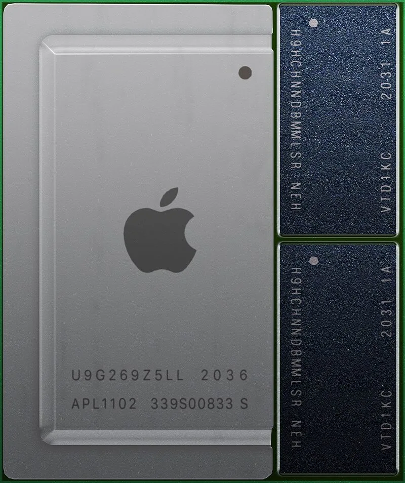

About the site
Welcome to the CPU History site, where we aim to give a succinct history of the CPU and its development. Please enjoy your stay and consider filling in the suggestions form if you feel anything is missing or could be improved within the site.
Inception of the CPU
The 4004

On the 15th of November, 1971, Intel released the 4004. This was the first general-purpose processor, posessing only a 4-bit wide bus and running at a clockspeed of 740 KHz.
This small, single chip had as much computing power as the ENIAC (A 1800 square foot computer built just over 2 decades prior which drew 200KW of power) and drew only 1W of power.
After Intel was contracted to design a set of seven chips for an electronic calculator for Busicom (3 of which being for the CPU), Marcian Hoff proposed that the design complexity and cost could be reduced by combining the 3 CPU chips into one.
The first functional sample of this chip was delivered to Busicom in March, 1971 and was used in their 141-PF printing calculator engineering prototype.
Development Throughout the Decades
Since the first 4004 prototype with a 10 micrometer feature size which fit just 2300 transistors into a 12mm2 die, scientists have endevoured to create greater density chips, allowing for more performance and power efficiency in a similar footprint. This requires hundreds of millions of pounds worth of research and development as the laws of physics fight back against these advances.
Other ventures, such as exploring new processor architectures (Such as ARM) or splitting tasks across multiple cores have also been important in pushing towards higher levels of performance.
The Modern Day CPU
As of 2022, the desktop processor remains primarily within the CISC architecture x86, with almost every new device being released having multiple processing cores, ranging from 4 to 64 depending on budget, market and power limitations. AMD and Intel are two major offerings for the western computer market, with many of the once popular manufacturers in the 90s having shut down or been bought out.
Drawing from its years of expertise developing ARM based mobile processors, Apple has scaled these chips up to create very powerful but efficient laptop and desktop processors. They feature a high level of integration, with the ram being soldered directly next to the SoC, allowing for extremely high memory bandwidth, processing speed and further power draw improvements.
This tightly-knit design makes their products even more proprietary and cements their anti-repair designs even further, with fears in the industry that the upgradeability and repairability of modern computers could suffer if more companies followed suit.